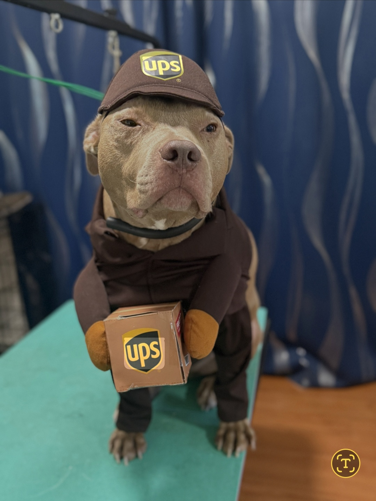
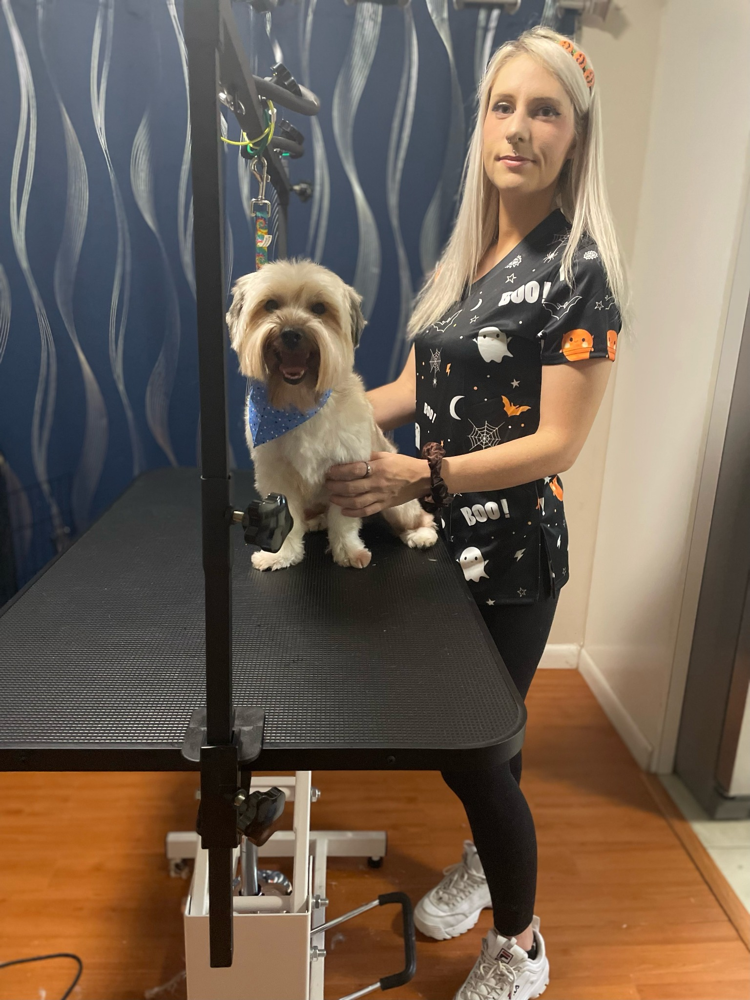

Comfort first
A relaxed setting and a gentle touch for every dog.

Welcome to Furever Fluffy, where your pet’s comfort and happiness are my top priorities. I’m the heart and hands behind this home-based grooming salon in Deltona, Florida.
Explore our services
Every pup is family ♡A relaxed setting and a gentle touch for every dog.
Breed-specific cuts and creative styles tailored to your pup.
Thoughtful products and attention to skin and coat health.

With a decade of experience working with dogs and five years as a professional groomer, I’ve developed a deep love and understanding of our furry friends. My journey in pet care is driven by a passion for animals and a commitment to providing quality grooming in a relaxed, stress-free environment.
At Furever Fluffy, I offer services tailored to your dog’s unique needs, from breed-specific cuts to creative styles, always with a gentle touch and attention to detail. I’m committed to using quality products to help keep your pet’s skin and coat healthy and beautiful.
In addition to running Furever Fluffy, I’m a part-time college student and a single mom, balancing the joys and challenges of both school and parenthood.
Every dog that walks through our doors becomes part of the Furever Fluffy family. I’m dedicated to making sure your pet not only looks great but feels great too. Thank you for trusting me with your furry friend—I can’t wait to meet them!